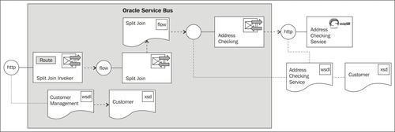
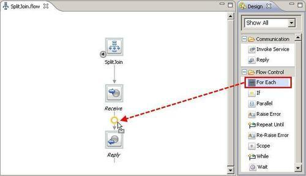
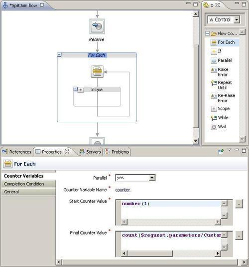
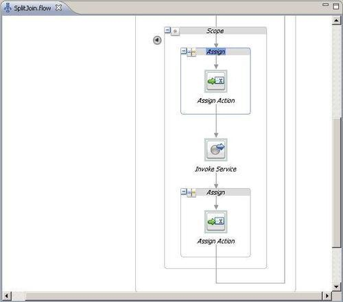
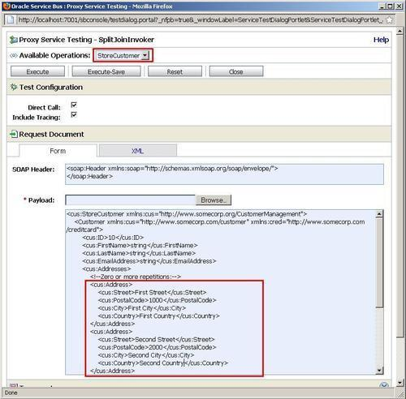

In this recipe, we will use the Split-Join functionality of the Oracle Service Bus to handle outgoing service callouts in parallel instead of the usually used sequential method.

You can import the OSB project containing the base setup for this recipe into Eclipse OEPE from \chapter-9\getting-ready\using-dynamic-split-join.
Start the soapUI mock service simulating the Address Checking Service by double-clicking on start-AddressCheckingService.cmd in the \chapter-9\getting-ready\misc folder.
A Split-Join is a separate artifact, which we will create first. In Eclipse OEPE, perform the following steps:
flow in the project using-dynamic-split-join. SplitJoin into the File name field and click Next. CustomerManagement.wsdl file and click Finish.
counter into the Counter Variable Name field on the pop-up window. Click OK. number(1) into the Start Counter Value field. count($request.parameters/Customer/cus:Addresses/cus:Address) into the Final Counter Value field.
business folder. addressCheckRequest into the Name field and click OK. addressCheckResponse into the Name field and click OK.<add:CheckAddress
xmlns:add="http://www.osbcookbook.org/AddressCheckingService/">
{$request.parameters/Customer/cus:Addresses/cus:Address[$counter]}
</add:CheckAddress>

<out>COMPLETED</out>
We have successfully created the Split-Join flow artifact. Now, let's create the business service, which will invoke the Split-Joint through the flow transport. The business service can easily be generated by performing the following steps in Eclipse OEPE:
business folder in the Service Location tree and enter SplitJoin into the Service Name field and click OK.Now, let's add the call of the business service to the already existing SplitJoinInvoker proxy service. In Eclipse OEPE, perform the following steps:
InvokeSplitJoinRoute.Now, we can test the proxy service. In the Service Bus console, perform the following steps:
proxy folder inside the using-dynamic-split-join project.
We have seen how the OSB's advanced mediation feature, called Split-Join, can help to improve the performance of the service by concurrently processing individual parts of a message. The Split-Join first splits the input message payload into submessages (split), processes these submessages concurrently and then aggregates the responses into one return message (join). In our case, the splitting has been done on the collection of addresses in the customer request message and the concurrent processing involves the invocation of the Address Checking Service in parallel.
Split-Joins are useful for optimizing the overall response time when parts of the request messages need to be processed by slower services, that is, each individual address has to be handled by a call to the Address Checking Service, taking four seconds to respond. Because of the parallel nature, the whole Split-Join finishes in little more than four seconds. This is a huge benefit compared to the solution with the For Each action shown in the Using the For Each action to process a collection recipe.
The Split-Join of the Oracle Service Bus comes in two flavors:
In this recipe, we have used the dynamic Split-Join.